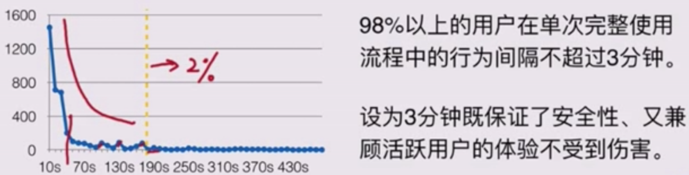
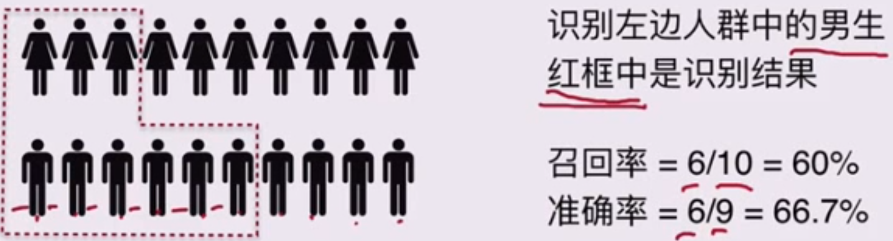
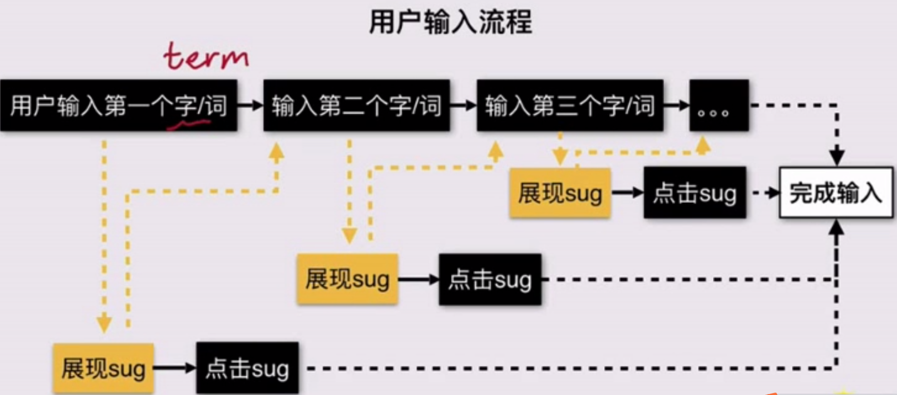

策略产品工作的通用方法论是定义理想态——拆解未达到理想态的情况——提出解决方案——验证是否解决，具体到工作的每一个环节是发现问题——撰写需求、发起项目——跟进开发评估——上线后效果回归
策略需求的不同及简单策略的文档撰写
需求文档
让项目参与方和其他对项目感兴趣的角色更好地理解需求的来龙去脉
包括：项目背景、项目目标、需求概述、需求详述、（统计需求、监控需求）
策略四要素
待解决问题
输入：影响解决方案的因素
计算逻辑：将输入转换成输出的规则
输出：具体的解决方案
策略分类
简单策略
逻辑简单直接的需求，通常开发成本较小，PM可以直接给出策略规则（包括待解决问题、输入、计算逻辑、输出四要素的部分或全部）
案例
屏幕亮度
简单策略：背光亮度受环境亮度影响
需求描述：屏幕亮度=外部亮度+5
PM直接给出策略规则
基于历史数据给出（已有一定数据积累的情况下）
参照竞品给出（多用在产品从0到1搭建，没有数据积累的时候）
案例
微众银行APP在用户超过3分钟无任何活动时再次打开APP需输入登录密码，为什么是3分钟？
【输入密码】产品的目标：保障安全性，同时不影响用户正常操作体验
【输入密码间隔】策略的目标：找到那个不影响用户体验的最短的时间间隔
基于历史数据：定义完整使用流程——统计流程中间隔——找到目标间隔时间
定义完成使用流程：
抽样分析用户全天的行为记录，得到一次完成使用流程的定义
任意两个动作间隔小于30分钟的动作序列
统计流程中间隔：
- 抽样1k个用户完整使用流程，统计流程中所有动作间间隔
找到目标间隔时间：

参照竞品：经过多次重复尝试，确认竞品定义了超过3分钟用户就要再次输入密码，那自己的产品也可以暂定为3分钟
复杂策略
逻辑复杂的需求，通常开发成本较大
PM详细描述待解决问题、输入因素、输出效果，包括总结性的概述和实例case（来源于问题调研）
计算逻辑由策略工程师开发实现
实际工作中的两类项目
从0到1的项目：更多描述理想态，在怎样的输入下要达成怎样的输出效果
策略迭代的项目：更多描述策略现状，待解决的问题是什么，针对这些问题，理想输出结果该是怎样的
案例：
从0到1：电子书阅读器的屏幕阅读体验不佳如何解决？
需求概述：待解决问题
需求详述：
输入因素和输出结果的概述：触发条件、考虑因素
各类特殊情况下的计算逻辑补充
输入因素和输出效果的详述（case示例）
策略迭代：滴滴拼车策略优化
需求文档的自检清单
结构：逻辑清晰，层次分明
背景：需求背景描述清楚，待解决问题一目了然
目标：产品理想态或考核指标是什么
示例：通过示例辅助，让问题更明确和清晰
小结
策略需求文档的核心是将策略的四要素描述清楚
其中针对复杂策略，可以跳过计算逻辑这个要素，但是需要通过具体的case示例将问题和产品实现效果更清晰地表达出来
跟进开发评估基本方法
策略类项目的流程

评估类型
策略质量评估：关注每个策略的质量（军事类新闻的识别策略，看识别的效果如何）
Diff评估：关注复杂系统中的某个策略上线后，对用户体验的真正影响（新军事识别策略上线后，用户感知到的推荐结果是否真的变好）
策略质量评估
策略质量评估：用来说明策略本身的质量
输出结论：该策略的召回率&准确率
召回率=希望被覆盖的案例中，策略实际覆盖到的案例/理想态下希望策略覆盖的案例（代表策略对问题的解决程度）
准确率=策略覆盖的案例中，真正希望被覆盖的/策略覆盖的所有案例（代表策略有没有带来其他伤害）
案例

验证
案例：性别识别策略
通过Diff评估来进行开发评估
Diff评估
在一个复杂的策略体系中，各种策略会互相作用，共同影响最终效果，比如搜索、推荐。
在迭代其中某条策略时，除了评估策略本身的召回和准确，还要关注策略变化前后，用户视角直接感受到的产品效果变化是怎样的。
输出结论：diff影响面、good：same：bad
Diff影响面：策略调整前后，用户感知发生变化的比例，通常要小于策略影响面（两类情况分数增加5分，用户感知没变：每一条结果都包含这个特征、结果之间的差距大于5）
good：same：bad（简称g:s:d）：随机抽样有变化的case，站在用户体验角度评估效果是变好了、无变化还是变差了（可以分为3/5/7档）
案例
案例：性别识别策略
（关于判断不出性别的，可以增加男+女标签）
（性别标签为空可以不用关于性别维度的推荐策略，策略是为了结果和目标服务的，不是为了搭建一个符合常识的知识库）
如何做评估
定义理想态——拆解未达理想态的情况——提出解决方案——验证是否解决
具体到如何做评估，更关注方法论的后三个环节，具体包括三个步骤
基于理想态，找到问题
策略召回率理想是100%，目前只有60%，剩余40%没被策略召回
策略diff评估中有占比10%的bad case
汇总和抽象问题，提出解决问题or方向
40%未找回case主要是3类问题，分别应该通过XX思路解决
目前占比10%的badcase主要是XX原因，需要解决
给出结论
问题依然很严重、需要继续优化or问题可接受、策略可以上线了
老问题：以投入产出比为主要考虑因素，通常以项目预期为终止点
新问题：通常容忍度较低。以PM认为的不可忍受的体验为标准
典型评估循环
小结
开发过程中的评估是策略PM的必经之路，是PM和RD通过深度配合在黑暗中找到道路的重要环节。
召回率、准确率、diff影响面、g:s:d四个指标是策略评估的主心骨，所有评估都是围绕他们发现和抽象问题的过程
了解什么是效果回归
什么是效果回归
回答三个问题
有没有解决问题or达到目标
如果有：有没有进一步优化空间、有没有引入新问题，优化/解决手段是什么
如果没有：是为什么，如果要达到目标、接下来要做什么
定义理想态——拆解未达理想态的情况——提出解决方案——验证是否解决
主要关注前两个
如果做效果回归
项目启动前
第一步：明确预期：产品/项目目标是什么
第二步：指标体系：该目标可以用哪些数据指标来衡量
建立指标体系
回答三个问题
问题和目标是什么：找到核心指标
解决问题和实现目标的关键路径是什么：找到过程指标
新的路径伤害了谁：找到观察指标
（如果需要新埋点，需要先和RD说明，并在文档写清楚）
开发上线
第三步：确定上线方式
全流量上线：如果核心/过程/观察指标仅与本项目有关，评估效果很好、希望尽快上线拿到收益时，可选择全流量上线（回归方法：实验期同比上个时间周期，变化了xx%）
小流量上线：如果核心/过程/观察指标变化可能受项目外的因素影响，或者项目效果存在一定不确定性时，尽量选择AB test（回归方法：实验流量比基线，变化了xx%）（注意：抽样方法是否足够随机。样本集合是否有天然差异。先进行流量空跑，避免问题）
上线后
第四步：收集第二步中指标，看是否达到第一步的预期
第五步：分析问题产出结论（符合预期：产品循环暂时中止，不合预期：新的产品循环开始）
案例
百度搜索【搜索建议】（sug）的效果回归
项目启动前指标拆分——核心指标
产品目标：降低用户输入成本
核心指标：用户输入时间，预期降低2秒
项目启动前指标拆分——过程指标

用户输入效率的影响因素：sug展现的比例，在哪个输入长度下展现，是否被用户点击
过程指标：sug展现率、平均输入长度、sug点击率
项目启动前指标拆分——观察指标
sug改动对输入流程的影响是可控的，对输入后搜索体验的影响是不确定的。（某种意义上，sug起到了推荐效果）
观察指标：sug输入query的搜索结果满意度
选择上线方式
小流量上线：实验组、对照组各10%流量
上线后回归
核心指标：降低了1.2秒，有收益，但是低于预期
过程指标和观察指标：
平均输入长度变短，符合预期
sug展现率变低，点击率没变化，与预期不符；
并且sug输入query的搜索满足度降低，用户体验差
分析后结论
性能有问题，导致长词汇（多term）sug的加载过慢、拉低了平均展现率和使用率——启动性能优化项目
在一些热门候选词上做了需求拓展（欢乐颂2剧情介绍），对应的搜索结果质量较差——需要联合搜索排序（基础rank）部门优化效果
小结
效果回归是决定一个产品循环终止或再开始的枢纽。
整个工作贯穿项目前中后三个阶段；项目启动前对策略目标和过程的深刻剖析是效果回归工作最关键和重要的部分
回顾策略工作的思考方法
通用方法论
定义理想态——拆解未达理想态的情况——提出解决方案——验证是否解决
（发现问题——解决问题循环）
具体到工作的每个环节
发现问题——撰写需求、发起项目——跟进开发评估——上线后效果回归
发现问题：对问题的分析更宏观，产出可能是一系列项目计划
定义理想态
抽样分析未达理想态的问题是什么
对所有问题进行归类统计，确定优化方向和项目优先级
撰写需求、发起项目：提出解决方案，承上启下的环节
- 以逻辑描述和case示例的方式描述待解决问题和解决后的效果期望
跟进开发评估：对问题的分析更具体，直接指导具体策略的优化逻辑
- 验证每一版策略是否解决了所有问题
上线后效果回归：结论得出首先依赖指标的统计性分析，未达目标时才进行【发现问题】的拆解
- 验证是否符合上线前预期（贯穿前中后）
进阶：策略的产品循环
以一个小的策略为例，看看在完整的产品循环下策略的通用方法论是如何应用的——京东到家的消息推送策略
理解产品目标
产品目标：通过消息触达用户，实现相应的转化目的
核心指标：消息点击率
本案例覆盖的消息仅指活动类消息，不包括各类业务消息（比如订单发货、退款、订阅更新等业务环节的提醒）
版本0.0：人工推送
产品方案：运营同学写好文案，通过简易的消息推送工具给全部注册用户发送消息
推送效果：点击率只有0.5%
发现问题方法论
定义理想态以数字指标衡量——未达理想态的情况抽样分析——给出各类问题优先级排序
版本0.0——问题分析
理想态：所有人都点击
未达理想态：有99.5%的人没有点击，怎么拆解？
提出新的分析思路：反向看点击的人，对比点击的人和每点击的人有什么差异，试着分析其中规律
进一步优化：
这次推送对活跃用户的效果更好，点击率大概7.4%，非活跃用户只有0.1%。虽然预期会有差异，但是差距太大，需要试着优化针对不活跃用户的推送内容
活跃用户中，安卓点击率23%、iPhone点击率3.5%。差异非常大，不符合认知，猜测可能大量iPhone关掉了app推送
版本1.0：增加基于用户分层的推送
产品方案：
基于用户基础信息和历史行为挖掘用户标签：活跃程度、手机平台6
运营可根据标签配置不同的文案和推送通道
增加短信推送渠道
版本1.0：效果回归
推送效果：点击率提升至1.5%
活跃用户点击率提升至11%，其他用户点击率0.5%，都提升明显
iPhone点击率0.7%，安卓用户点击率2.4%，iPhone转化率依然不高
结论：短信通道的效果不好，需要分析问题。另外，可以进一步分析其他待优化点
版本1.0：问题分析
首先分析短信通道问题，发现：
app中没有埋点，所以点击短信短连接后无法调起app
而且短信中的短连接没有加统计标识，打开的移动端网页不知道这是短信带来的流量
对没有点击的各用户群各自抽样分析，发现：
没有点的用户都是曾经很少或者没有买过肉蛋奶类商品的用户
版本2.0：个性化的内容推送
产品方案：
收集更多用户历史行为（订单、收藏、搜索、浏览）等，建立更加细化的用户标签，用于内容推荐
收集平台商品上架和价格等信息的变化和常规活动信息，作为待推送内容集合
根据用户标签和候选内容，生成基于每个用户兴趣的内容
设置推送频率限制，在允许频率内，当某用户存在可推内容时，自动进行推送
版本2.0：效果回归
推送效果：点击率提升至2.5%
iPhone点击率2.1%，安卓用户2.6%，两者非常接近了，符合预期
优化内容后，各类用户的点击率均有可以明显提升
结论：比较符合预期，可以进一步分析其他待优化点
版本2.0：问题分析
继续对比点击和未点击用户差异，并随机抽取用户详细分析，发现：
各推荐维度在不同品类上有不同表现
不同用户对同一种推荐维度的点击率也差异较大
同一用户在不同时间段的点击率有比较明显的差异
版本3.0：基于反馈的推荐系统
产品方案：
将推送时间纳入推送控制
继续丰富推荐使用的标签数据
将每个人的点击行为作为推荐优化的重要依据，不停迭代
小结
消息推送的效率本质：
- 给合适的用户在合适的时间点发送合适的消息（【合适】最初由PM定义，最终根据数据反馈确定）
这个完整的案例中，产品一步步进化，从功能到策略、从简单策略到复杂策略，我们一次优化了消息推送的四个要素，达到了相对理想的状态
在这个过程中，我们仅以问题驱动，并未加入优先级判断的分析
而在实际项目中，限于成本收益和平台数据的积累程度，很多消息推送策略停留在1.0或2.0版本即中止进化了